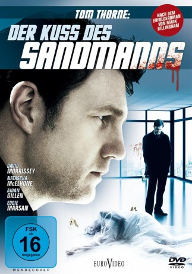

#6970 Der Kuss des Sandmanns
Alternativ: Thorne: Sleepyhead
 
 IMDB-Wertung: 6.8 / 10
IMDB-Wertung: 6.8 / 10  Metascore: 0
Metascore: 0 
Eine mysteriöse Mordserie, bei der mehrere Frauen getötet wurden, beschäftigt Ermittler Tom Thorne. Seine Aufklärungsarbeit verläuft schleppend, bis plötzlich eine Überlebende auftaucht und schwer verletzt ins Krankenhaus eingeliefert wird. Thorne hofft auf eine Zeugin, doch dann muss er mit Erschrecken feststellen, dass sie am Locked-In-Syndrom leidet: einer Krankheit, bei der ihr wacher Geist in einem vollständig gelähmten Körper steckt. Dann erreicht Ghorne eine grausame Nachricht des Mörders und die Ermittlung wird für ihn zu einer persönlichen Angelegenheit. Als ein weiterer Mord geschieht, ist ihm jedes Mittel recht, den Täter zur Strecke zu bringen.
Jahr: 2010
Dauer: 125 Minuten
FSK: 16
Land: England Studio: EuroVideoTonspuren: DTS - ,
Untertitel:
Auflösung: 1080p (1920x1080) Größe: 13004 MB
Genre: Thriller, Drama, Krimi, Mystery
Regisseur:  Stephen Hopkins
Stephen Hopkins
Drehbuch: Dudi Appleton
Soundtrack:
Darsteller:
 Lorraine Ashbourne als Ruth Brigstocke
Lorraine Ashbourne als Ruth Brigstocke Stephen Campbell Moore als Jeremy Bishop
Stephen Campbell Moore als Jeremy Bishop Joshua Close als Josh Ramsey
Joshua Close als Josh Ramsey- Emmanuella Cole als Angel
- O-T Fagbenle als Dave Holland
 Aidan Gillen als Phil Hendricks
Aidan Gillen als Phil Hendricks- Sara Lloyd Gregory als Alison Willetts
 Lee Nicholas Harris als Tattoo'ed punter in shop
Lee Nicholas Harris als Tattoo'ed punter in shop- Diveen Henry als Yvonne Kitson
- Aisling Loftus als Rachel
- Lily Loveless als Chloe
 Eddie Marsan als Kevin Tughan
Eddie Marsan als Kevin Tughan Brian McCardie als Francis Calvert
Brian McCardie als Francis Calvert Natascha McElhone als Anne Coburn
Natascha McElhone als Anne Coburn- Georgia Moffett als Sophie Holland
 David Morrissey als Tom Thorne
David Morrissey als Tom Thorne- Nansi Nsue als Alice's friend
- Sue Parker-Nutley als Patient in Hospital
- Amanda Root als Teresa Maxwell
- Jack Shepherd als Jim Thorne
 John Warman als Police Officer
John Warman als Police Officer- Stuart Antony als Main Goth , uncredited
- Brana Bajic als Gina
- Trinity Barden als Anne-Marie Calvert
- Phillip Browne als Bouncer
- Matthew Chadwick als Young James
 Daniel Fearn als Drunk Guy
Daniel Fearn als Drunk Guy- Jamie Fillery als Night club customer
- Jensen Freeman als Forensic Officer
- Salma Goldie als Alison Double
- Peter Gordon als Old man witness
- James Helder als Hospital Staff
- Trevor Laird als Assistant commissioner
- Sarah Lowe als Bare Legged Girl
- Johnny Lynch als Great Eastern Hospital Security
 Sarah Niles als Maggie Byrne
Sarah Niles als Maggie Byrne- Colin Osborne Jr. als Removal Man
- Billy Reid als Security Guy
- Brian Shaw als Night Club Drinker
- Niamh Smith als Samantha Calvert
- Siena Stapleton-Brister als Lauren Calvert
- Elisha Willett als Hooker
- Chris Wilson als Ambulance Paramedic
- Michael Aston als Doctor , uncredited
- Matthew David McCarthy als Crime Scene Witness , uncredited
Datei: X:\2010(G-M)\Kuss des Sandmanns, Der (2010, FSK16, 1920x1080).mkv seit 15.09.2017
Festplatte: HD 2010(G-Z)-2011(A-F)
 Es gibt insgesamt 85 Filme in der Gruppe '2010(G-M)'
Es gibt insgesamt 85 Filme in der Gruppe '2010(G-M)'